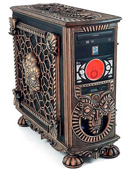
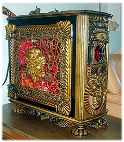
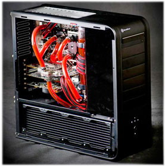
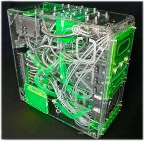
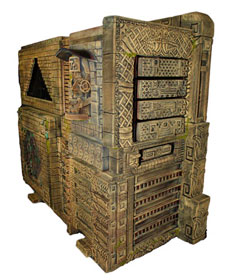
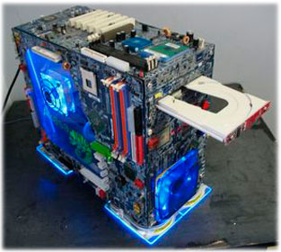
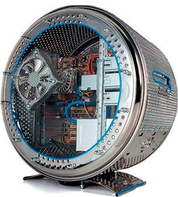

Компьютерный моддинг и все его положительные стороны.

Уже давно каждый из нас понял все прелести новых технологий. Теперь редко встретишь человека, не использующего мобильный телефон, ПК, ноутбук, планшет или какие-либо еще технологические экземпляры.
Кто-то с помощью них зарабатывает себе на жизнь, не придавая особого значения тому, как выглядит его электроника. Кто-то просто наслаждается их возможностями и прекрасно отдыхает, смотря кино или
слушая музыку. Но есть категория людей, для которых не только технические характеристики, но и внешний вид ноутбука или персонального компьютера очень важны. Я говорю о любителях, так называемого,
компьютерного тюнинга, или же говоря на профессиональном языке – моддинга.
Не смотря на то, что супермаркеты электроники, а тем более, интернет-магазины просто кишат разнообразными моделями всевозможных видов и цветов, иногда хочется чего-то особенного, уникального.
Тогда приходится браться за дело самому и создавать техно-шедевр. Компьютерный моддинг предусматривает установку различных новых деталей, покраску, изменение формы, повышение производительности и
еще многое-многое другое. Все эти изменение помогут сделать Ваш компьютер не просто особенным или привлекательным, а абсолютно уникальным, единственным в своем роде экземпляром. Люди, занимающиеся
компьютерным моддингом и
ремонтом компьютеров, могут делать это на профессиональной основе или в свое удовольствие, однако и для тех, и для других – это целое искусство.
Если взглянуть в корень слова «моддинг», то можно увидеть что оно производное от английского «mod» и означает «модификацию, изменение». А каково будет направление этой модификации – это уж
Вам решать. Безусловно, можно значительно разогнать «машину» установив определенные апгрейды, однако чаще всего целью является эстетическое удовлетворение и придание обычному куску железа и пластика
собственного стиля и уникальности.
Что же можно сделать со своим
игровым компьютером? Во-первых, можно изменить внешние детали системного блока, вырезав в них окна,
приделав к ним декоративные элементы, либо же полностью заменить их,
например, на прозрачные или форменные панели. Во-вторых, можно усовершенствовать ПК светодиодами, сделав его ярче, чем освещение в ночном клубе. Также можно добавить замок зажигания, установить
внешние декоративные кулеры, отреставрировать старую мышь и клавиатуру, создав на них образы из популярных игр и так далее. Граница только одна – Ваша фантазия.






Компьютерный моддинг быстро, просто, недорого и интересно сделает Ваш компьютер самой интригующей вещью среди всех знакомых и не нужно будет больше стесняться громоздкого, гудящего «шкафа» у себя на столе.
Удачного апгрейда!
Читайте также:
Почему Intel лучше, чем AMD?
Интерфейсы передачи данных.
Следующая статья:
Wi-Fi. Что же это такое?